CODING AGENTS AS PIXEL WORLD MODELS
traex/DeepSeek-V4.1-Flash · 0138
点击播放 · 原生 RGB 像素
逐轮保存的候选
回放视频、检查图与代码变化。
每份候选均可单独播放。实际图片检查记录在下方工具轨迹中。
候选 01播放与检查图
点击播放 · 原生 RGB 像素

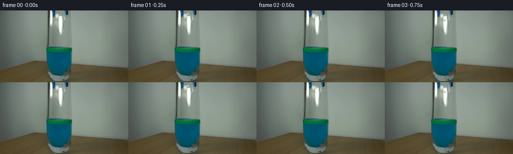
展开代码变化
--- 上一保存版本
+++ 本次保存版本
@@ -0,0 +1,298 @@
+from __future__ import annotations
+
+import math
+from pathlib import Path
+
+import imageio.v2 as imageio
+import numpy as np
+from PIL import Image, ImageDraw, ImageFilter
+
+import artifact_io
+
+
+WIDTH = 256
+HEIGHT = 144
+FPS = 4
+N_FRAMES = 20
+SUPERSAMPLE = 4
+
+ROOT = Path(__file__).resolve().parent
+BASE = np.asarray(Image.open(ROOT / "first_frame.png").convert("RGB"), dtype=np.uint8)
+
+RELEASE_TIME = 0.22
+CONTACT_TIME = 1.48
+WATER_Y = 77.0
+PAPER_X = 119.2
+
+
+def _paper_sprite() -> Image.Image:
+ """Build a tiny crumpled-paper sprite with deterministic folds."""
+ size = 64
+ mask = Image.new("L", (size, size), 0)
+ mdraw = ImageDraw.Draw(mask)
+ angles = np.linspace(0.0, math.tau, 18, endpoint=False)
+ radii = np.array(
+ [
+ 0.84,
+ 0.96,
+ 0.78,
+ 1.02,
+ 0.90,
+ 0.76,
+ 0.98,
+ 0.86,
+ 1.00,
+ 0.82,
+ 0.94,
+ 0.77,
+ 1.03,
+ 0.88,
+ 0.96,
+ 0.81,
+ 0.99,
+ 0.86,
+ ]
+ )
+ points = [
+ (
+ 32 + math.cos(angle) * 23 * radius,
+ 32 + math.sin(angle) * 21 * radius,
+ )
+ for angle, radius in zip(angles, radii)
+ ]
+ mdraw.polygon(points, fill=255)
+
+ paper = Image.new("RGBA", (size, size), (0, 0, 0, 0))
+ draw = ImageDraw.Draw(paper)
+ draw.polygon(points, fill=(205, 201, 184, 255))
+
+ facets = [
+ ([(9, 26), (25, 12), (32, 30), (18, 43)], (229, 226, 207, 255)),
+ ([(27, 9), (47, 17), (43, 34), (32, 30)], (190, 187, 172, 255)),
+ ([(18, 43), (32, 30), (48, 42), (36, 53)], (168, 166, 153, 255)),
+ ([(43, 34), (56, 28), (52, 45), (48, 42)], (213, 210, 192, 255)),
+ ([(25, 12), (27, 9), (32, 30), (18, 43)], (217, 214, 195, 255)),
+ ]
+ for polygon, color in facets:
+ draw.polygon(polygon, fill=color)
+
+ draw.line([(19, 44), (31, 30), (44, 36)], fill=(126, 126, 118, 230), width=2)
+ draw.line([(27, 11), (31, 30), (51, 21)], fill=(144, 143, 132, 180), width=1)
+ draw.line([(15, 25), (31, 30), (42, 49)], fill=(239, 236, 218, 145), width=1)
+ paper.putalpha(mask)
+ return paper
+
+
+PAPER_SPRITE = _paper_sprite()
+
+
+def _paper_state(frame_index: int) -> tuple[float, float, float, float, float]:
+ """Return center x/y, angle, width scale, and wetness."""
+ t = frame_index / FPS
+ if t < CONTACT_TIME:
+ dt = max(0.0, t - RELEASE_TIME)
+ y = 7.4 + 43.5 * dt * dt
+ x = PAPER_X + 0.55 * math.sin(dt * 5.1)
+ angle = -13.0 + 9.0 * dt
+ return x, min(y, WATER_Y), angle, 1.0, 0.0
+
+ dt = t - CONTACT_TIME
+ tau = 0.28
+ terminal = 6.0
+ initial_velocity = 57.0
+ displacement = terminal * dt + (initial_velocity - terminal) * tau * (1.0 - math.exp(-dt / tau))
+ y = WATER_Y + displacement
+ x = PAPER_X + 1.25 * math.sin(2.7 * dt) * math.exp(-0.22 * dt) + 0.45 * math.sin(6.2 * dt)
+ angle = 8.0 + 35.0 * dt + 7.0 * math.sin(2.2 * dt)
+ wetness = min(1.0, 0.28 + dt * 0.72)
+ return x, y, angle, 1.0, wetness
+
+
+def _add_paper(overlay: Image.Image, frame_index: int) -> None:
+ x, y, angle, scale, wetness = _paper_state(frame_index)
+ t = frame_index / FPS
+
+ target_w = (8.4 if t < CONTACT_TIME else 7.2) * scale
+ target_h = (7.5 if t < CONTACT_TIME else 6.0) * scale
+ if 1.30 <= t < CONTACT_TIME + 0.10:
+ target_h *= 0.68
+
+ sprite = PAPER_SPRITE.rotate(angle, resample=Image.Resampling.BICUBIC, expand=True)
+ sprite = sprite.resize(
+ (max(1, round(target_w * SUPERSAMPLE)), max(1, round(target_h * SUPERSAMPLE))),
+ Image.Resampling.LANCZOS,
+ )
+
+ if wetness > 0:
+ tint = np.asarray(sprite, dtype=np.float32)
+ water = np.array([23.0, 104.0, 130.0], dtype=np.float32)
+ amount = 0.63 * wetness
+ tint[:, :, :3] = tint[:, :, :3] * (1.0 - amount) + water * amount
+ tint[:, :, 3] *= 0.94
+ sprite = Image.fromarray(np.clip(tint, 0, 255).astype(np.uint8), "RGBA")
+
+ # A short translucent smear communicates the fast fall at four frames per second.
+ if 0.72 <= t < CONTACT_TIME:
+ v = 87.0 * max(0.0, t - RELEASE_TIME)
+ smear_h = min(6.5, v * 0.030)
+ if smear_h > 0.4:
+ smear = sprite.resize(
+ (sprite.width, max(1, round(smear_h * SUPERSAMPLE))),
+ Image.Resampling.BILINEAR,
+ )
+ alpha = np.asarray(smear.getchannel("A"), dtype=np.float32) * 0.16
+ smear.putalpha(Image.fromarray(alpha.astype(np.uint8), "L"))
+ sx = round(x * SUPERSAMPLE - smear.width / 2)
+ sy = round((y - smear_h * 0.62) * SUPERSAMPLE)
+ overlay.alpha_composite(smear, (sx, sy))
+
+ px = round(x * SUPERSAMPLE - sprite.width / 2)
+ py = round(y * SUPERSAMPLE - sprite.height / 2)
+ overlay.alpha_composite(sprite, (px, py))
+
+
+def _add_splash(overlay: Image.Image, frame_index: int) -> None:
+ t = frame_index / FPS
+ dt = t - CONTACT_TIME
+ if dt < -0.12 or dt > 0.95:
+ return
+ draw = ImageDraw.Draw(overlay, "RGBA")
+ s = SUPERSAMPLE
+ cx = PAPER_X * s
+ surface = WATER_Y * s
+
+ if dt < 0.12:
+ # Small crown and dimple at first contact.
+ for dx, height, width in [(-2.1, 2.8, 0.65), (-0.4, 4.5, 0.75), (1.4, 3.3, 0.6)]:
+ x = cx + dx * s
+ top = surface - height * s
+ draw.line((x, surface, x + 0.25 * s, top), fill=(177, 235, 221, 190), width=max(1, s // 2))
+ draw.ellipse(
+ (x - width * s, top - width * s, x + width * s, top + width * s),
+ fill=(215, 250, 240, 210),
+ )
+ draw.arc(
+ (cx - 7.0 * s, surface - 1.9 * s, cx + 7.0 * s, surface + 2.3 * s),
+ 190,
+ 350,
+ fill=(158, 226, 203, 150),
+ width=max(1, s // 2),
+ )
+ return
+
+ # A few ballistic droplets return toward the surface during the first second.
+ for j, (phase, offset, delay) in enumerate(
+ [(0.0, -4.2, 0.00), (1.7, -2.0, 0.05), (3.1, 0.6, 0.10), (4.5, 3.2, 0.03), (5.6, 1.2, 0.14)]
+ ):
+ tau = dt - delay
+ if tau <= 0 or tau > 0.72:
+ continue
+ vy = 10.5 + 1.5 * j
+ dy = -vy * tau + 23.0 * tau * tau
+ dx = offset + 0.7 * math.sin(phase + tau * 8.0)
+ x = cx + dx * s
+ y = surface + dy * s
+ radius = (0.55 + 0.08 * (j % 2)) * s
+ alpha = int(205 * max(0.0, 1.0 - tau / 0.75))
+ draw.ellipse((x - radius, y - radius, x + radius, y + radius), fill=(195, 242, 231, alpha))
+
+
+def _add_ripples(overlay: Image.Image, frame_index: int) -> None:
+ t = frame_index / FPS
+ dt = t - CONTACT_TIME
+ if dt < 0:
+ return
+ draw = ImageDraw.Draw(overlay, "RGBA")
+ s = SUPERSAMPLE
+ cx = PAPER_X * s
+ cy = 76.5 * s
+ for ring_index, delay in enumerate((0.0, 0.20, 0.43)):
+ age = dt - delay
+ if age <= 0:
+ continue
+ grow = 1.0 - math.exp(-age * 1.65)
+ rx = (2.2 + 23.5 * grow + ring_index * 1.2) * s
+ ry = (0.45 + 3.9 * grow) * s
+ fade = max(0.0, 1.0 - age / 3.55)
+ alpha = int(95 * fade * (0.76 if ring_index else 1.0))
+ width = max(1, round((1.25 - ring_index * 0.16) * s))
+ box = (cx - rx, cy - ry, cx + rx, cy + ry)
+ draw.arc(box, 185, 355, fill=(164, 234, 211, alpha), width=width)
+ draw.arc(box, 4, 176, fill=(0, 84, 91, int(alpha * 0.55)), width=width)
+
+
+def _add_bubbles(overlay: Image.Image, frame_index: int) -> None:
+ t = frame_index / FPS
+ dt = t - CONTACT_TIME
+ if dt < 0.05:
+ return
+ draw = ImageDraw.Draw(overlay, "RGBA")
+ s = SUPERSAMPLE
+ paper_x, paper_y, _, _, _ = _paper_state(frame_index)
+ for j in range(5):
+ phase = (dt * 1.15 + j * 0.29) % 1.0
+ bx = paper_x + (-3.2 + 1.55 * j) + 0.55 * math.sin(dt * 4.2 + j * 1.7)
+ by = paper_y - 2.0 - phase * (8.5 + j * 0.7)
+ if by < WATER_Y - 1:
+ continue
+ radius = (0.45 + 0.11 * (j % 3)) * s
+ alpha = int(75 * (1.0 - phase) * min(1.0, dt * 2.0))
+ if alpha <= 0:
+ continue
+ draw.ellipse(
+ (bx * s - radius, by * s - radius, bx * s + radius, by * s + radius),
+ outline=(174, 232, 222, alpha),
+ width=max(1, s // 3),
+ )
+
+
+def _render_frame(frame_index: int) -> np.ndarray:
+ if frame_index == 0:
+ return BASE.copy()
+
+ high = Image.new(
+ "RGBA",
+ (WIDTH * SUPERSAMPLE, HEIGHT * SUPERSAMPLE),
+ (0, 0, 0, 0),
+ )
+ _add_ripples(high, frame_index)
+ _add_bubbles(high, frame_index)
+ _add_paper(high, frame_index)
+ _add_splash(high, frame_index)
+
+ low = high.resize((WIDTH, HEIGHT), Image.Resampling.BOX)
+ base_image = Image.fromarray(BASE, "RGB").convert("RGBA")
+ composed = Image.alpha_composite(base_image, low).convert("RGB")
+ return np.asarray(composed, dtype=np.uint8)
+
+
+def main() -> None:
+ frames = np.stack([_render_frame(i) for i in range(N_FRAMES)], axis=0)
+ assert frames.shape == (N_FRAMES, HEIGHT, WIDTH, 3)
+ assert frames.dtype == np.uint8
+ assert np.array_equal(frames[0], BASE)
+
+ artifact_io.save(frames, ROOT)
+
+ video_path = ROOT / "video.mp4"
+ imageio.mimsave(
+ video_path,
+ list(frames),
+ fps=FPS,
+ codec="libx264",
+ quality=8,
+ macro_block_size=1,
+ ffmpeg_params=["-pix_fmt", "yuv420p", "-movflags", "+faststart"],
+ )
+
+ # A lightly blurred montage makes frame-to-frame motion easy to inspect.
+ thumb_w, thumb_h = WIDTH * 2, HEIGHT * 2
+ contact = Image.new("RGB", (thumb_w * 2, thumb_h * 2), (23, 27, 30))
+ for slot, index in enumerate([0, 2, 4, 6, 8, 11, 15, 19]):
+ image = Image.fromarray(frames[index]).resize((thumb_w, thumb_h), Image.Resampling.NEAREST)
+ contact.paste(image, ((slot % 2) * thumb_w, (slot // 2) * thumb_h))
+ contact.save(ROOT / ".tmp" / "motion_contact.png")
+
+
+if __name__ == "__main__":
+ main()
候选 02播放与检查图
点击播放 · 原生 RGB 像素
展开代码变化
--- 上一保存版本
+++ 本次保存版本
@@ -19,10 +19,11 @@
ROOT = Path(__file__).resolve().parent
BASE = np.asarray(Image.open(ROOT / "first_frame.png").convert("RGB"), dtype=np.uint8)
-RELEASE_TIME = 0.22
+RELEASE_TIME = 0.06
CONTACT_TIME = 1.48
WATER_Y = 77.0
PAPER_X = 119.2
+FALL_ACCELERATION = 36.5
def _paper_sprite() -> Image.Image:
@@ -91,7 +92,7 @@
t = frame_index / FPS
if t < CONTACT_TIME:
dt = max(0.0, t - RELEASE_TIME)
- y = 7.4 + 43.5 * dt * dt
+ y = 7.4 + FALL_ACCELERATION * dt * dt
x = PAPER_X + 0.55 * math.sin(dt * 5.1)
angle = -13.0 + 9.0 * dt
return x, min(y, WATER_Y), angle, 1.0, 0.0
@@ -126,10 +127,10 @@
if wetness > 0:
tint = np.asarray(sprite, dtype=np.float32)
water = np.array([23.0, 104.0, 130.0], dtype=np.float32)
- amount = 0.63 * wetness
+ amount = 0.38 * wetness
tint[:, :, :3] = tint[:, :, :3] * (1.0 - amount) + water * amount
tint[:, :, 3] *= 0.94
- sprite = Image.fromarray(np.clip(tint, 0, 255).astype(np.uint8), "RGBA")
+ sprite = Image.fromarray(np.clip(tint, 0, 255).astype(np.uint8))
# A short translucent smear communicates the fast fall at four frames per second.
if 0.72 <= t < CONTACT_TIME:
@@ -141,7 +142,7 @@
Image.Resampling.BILINEAR,
)
alpha = np.asarray(smear.getchannel("A"), dtype=np.float32) * 0.16
- smear.putalpha(Image.fromarray(alpha.astype(np.uint8), "L"))
+ smear.putalpha(Image.fromarray(alpha.astype(np.uint8)))
sx = round(x * SUPERSAMPLE - smear.width / 2)
sy = round((y - smear_h * 0.62) * SUPERSAMPLE)
overlay.alpha_composite(smear, (sx, sy))
@@ -214,7 +215,7 @@
rx = (2.2 + 23.5 * grow + ring_index * 1.2) * s
ry = (0.45 + 3.9 * grow) * s
fade = max(0.0, 1.0 - age / 3.55)
- alpha = int(95 * fade * (0.76 if ring_index else 1.0))
+ alpha = int(58 * fade * (0.76 if ring_index else 1.0))
width = max(1, round((1.25 - ring_index * 0.16) * s))
box = (cx - rx, cy - ry, cx + rx, cy + ry)
draw.arc(box, 185, 355, fill=(164, 234, 211, alpha), width=width)
@@ -261,7 +262,7 @@
_add_splash(high, frame_index)
low = high.resize((WIDTH, HEIGHT), Image.Resampling.BOX)
- base_image = Image.fromarray(BASE, "RGB").convert("RGBA")
+ base_image = Image.fromarray(BASE).convert("RGBA")
composed = Image.alpha_composite(base_image, low).convert("RGB")
return np.asarray(composed, dtype=np.uint8)
候选 03播放与检查图
点击播放 · 原生 RGB 像素

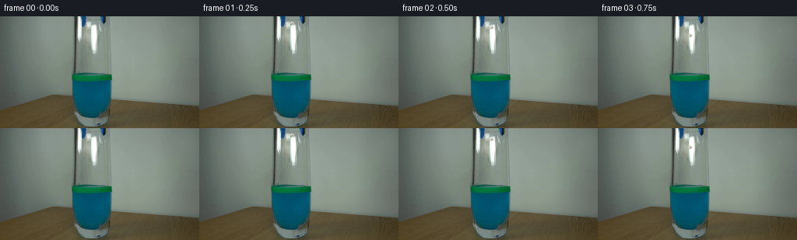
展开代码变化
--- 上一保存版本
+++ 本次保存版本
@@ -84,7 +84,20 @@
return paper
+def _source_paper_sprite() -> Image.Image:
+ """Lift the crumpled paper and its immediate jaw shadow from frame 00."""
+ crop = BASE[7:16, 112:120]
+ mask = Image.new("L", (8, 9), 0)
+ mask_draw = ImageDraw.Draw(mask)
+ mask_draw.polygon([(1, 1), (7, 1), (7, 6), (5, 8), (1, 7), (0, 4)], fill=255)
+ mask = mask.filter(ImageFilter.GaussianBlur(0.22))
+ sprite = Image.new("RGBA", (8, 9), (0, 0, 0, 0))
+ sprite.paste(Image.fromarray(crop), (0, 0), mask)
+ return sprite
+
+
PAPER_SPRITE = _paper_sprite()
+SOURCE_PAPER_SPRITE = _source_paper_sprite()
def _paper_state(frame_index: int) -> tuple[float, float, float, float, float]:
@@ -113,12 +126,13 @@
x, y, angle, scale, wetness = _paper_state(frame_index)
t = frame_index / FPS
- target_w = (8.4 if t < CONTACT_TIME else 7.2) * scale
- target_h = (7.5 if t < CONTACT_TIME else 6.0) * scale
+ target_w = (7.8 if t < CONTACT_TIME else 7.2) * scale
+ target_h = (7.8 if t < CONTACT_TIME else 6.0) * scale
if 1.30 <= t < CONTACT_TIME + 0.10:
target_h *= 0.68
- sprite = PAPER_SPRITE.rotate(angle, resample=Image.Resampling.BICUBIC, expand=True)
+ sprite_source = SOURCE_PAPER_SPRITE if t < CONTACT_TIME else PAPER_SPRITE
+ sprite = sprite_source.rotate(angle, resample=Image.Resampling.BICUBIC, expand=True)
sprite = sprite.resize(
(max(1, round(target_w * SUPERSAMPLE)), max(1, round(target_h * SUPERSAMPLE))),
Image.Resampling.LANCZOS,
候选 04播放与检查图
可观测工具轨迹
实际执行的命令与返回图片。
命令 1exit 0
/bin/bash -c "pwd && rg --files -g '"'!*.mp4'"' -g '"'!*.mov'"' -g '"'!*.webm'"' | sed -n '1,200p'"
命令 2exit 0
/bin/bash -c "printf '%s\\n' '--- prompt.txt ---'; cat prompt.txt; printf '%s\\n' '--- GENERATION_RULES.md ---'; cat GENERATION_RULES.md"
命令 3exit 0
/bin/bash -c "find . -maxdepth 2 -type f -printf '%p\\t%k KB\\n' | sort | sed -n '1,240p'"
命令 4exit 0
/bin/bash -c 'file first_frame.png; identify first_frame.png 2>/dev/null || true; ffprobe -v error -show_entries stream=width,height,pix_fmt -of default=nw=1 first_frame.png 2>/dev/null || true'
命令 5exit 0
/bin/bash -c "sed -n '1,260p' artifact_io.py"
命令 6exit 0
/bin/bash -c "python - <<'PY'
from PIL import Image
im=Image.open('first_frame.png')
print(im.mode, im.size)
print('corners', [im.getpixel(p) for p in [(0,0),(255,0),(0,143),(255,143),(128,72)]])
PY"命令 7exit 0
/bin/bash -c "sed -n '1,260p' player_template.html"
命令 8exit 0
/bin/bash -c "python - <<'PY'
from PIL import Image
im=Image.open('first_frame.png').convert('RGB')
im.resize((1024,576)).save('.tmp/first_up.png')
PY"命令 9exit 0
/bin/bash -c "python - <<'PY'
from PIL import Image
im=Image.open('first_frame.png').convert('RGB')
# Save diagnostic nearest crops
for name, box, scale in [
('top_crop',(90,0,150,72),8),
('glass_crop',(82,0,154,144),6),
('liquid_crop',(86,65,148,135),8),
]:
c=im.crop(box)
c.resize((c.width*scale,c.height*scale),Image.Resampling.NEAREST).save(f'.tmp/{name}.png')
PY"命令 10exit 0
/bin/bash -c "python - <<'PY'
from PIL import Image
import numpy as np
im=np.array(Image.open('first_frame.png').convert('RGB')).astype(float)
# Inspect row/column region colors, report stats by sampled coordinates.
for y in [0,5,10,15,20,25,30,35,40,45,50,55,60,65,70,75,80,85,90,100,110,120,130,140]:
row=im[y]
vals=[]
for x in [90,95,100,105,110,115,120,125,130,135,140,145,150]:
vals.append(tuple(row[x].astype(int)))
print(y, vals)
PY"命令 11exit 0
/bin/bash -c "python - <<'PY'
try:
import cv2; print('cv2',cv2.__version__)
except Exception as e: print('no cv2',e)
try:
import scipy; print('scipy',scipy.__version__)
except Exception as e: print('no scipy',e)
try:
import numpy; print('numpy',numpy.__version__)
except Exception as e: print('no numpy',e)
PY"命令 12exit 0
/bin/bash -c "ls -la; find . -maxdepth 2 -type f -name 'task_spec.json' -o -name '*.json' | sort"
命令 13exit 0
/bin/bash -c "python - <<'PY'
from PIL import Image
im=Image.open('first_frame.png')
im.crop((90,0,145,50)).resize((440,400),Image.Resampling.NEAREST).save('.tmp/tool_up.png')
PY"命令 14exit 0
/bin/bash -c "python - <<'PY'
from PIL import Image
import numpy as np
im=np.array(Image.open('first_frame.png').convert('RGB')).astype(int)
for y in range(48,84):
s=''
for x in range(96,149):
r,g,b=im[y,x]
if b>g+15 and b>r+20 and b<190: c='B'
elif g>r+30 and g>b-5: c='G'
elif r+g+b<210: c='#'
elif r+g+b>650: c='W'
elif max(r,g,b)-min(r,g,b)<18: c='.'
else: c='o'
s+=c
print(f'{y:03d} {s}')
print(' '+''.join(str(x//10%10) for x in range(96,149)))
print(' '+''.join(str(x%10) for x in range(96,149)))
PY"命令 15exit 0
/bin/bash -c "python - <<'PY'
from PIL import Image
im=Image.open('first_frame.png')
im.crop((90,0,145,20)).resize((880,320),Image.Resampling.NEAREST).save('.tmp/tool_top_pixels.png')
PY"命令 16exit 0
/bin/bash -c 'command -v ffmpeg || true; command -v ffprobe || true; command -v chromium || command -v google-chrome || command -v playwright || true'
命令 17exit 0
/bin/bash -c "python - <<'PY' mods=['imageio','imageio_ffmpeg','moviepy','av','matplotlib'] for m in mods: try: x=__import__(m); print(m,'yes',getattr(x,'__version__','')) except Exception as e: print(m,'no') PY"
命令 18exit 0
/bin/bash -c "python - <<'PY'
from PIL import Image
import numpy as np
im=np.array(Image.open('first_frame.png').convert('RGB'))
# Print selected rows at x 105..141 with RGB concise.
for y in range(0,16,2):
print('row',y)
for x in range(105,142,4): print(x, tuple(im[y,x]), end='; ')
print()
PY"命令 19exit 0
/bin/bash -c "python - <<'PY'
from PIL import Image
import numpy as np
im=np.array(Image.open('first_frame.png').convert('RGB'))
for y in [0,2,4,6,8,10,12,14,16,18,20,25,30,35,40,45,50,55,60,65,70]:
row=im[y]
xs=np.where((row[:,2]>row[:,0]+25)&(row[:,2]>row[:,1]+5)&(row[:,2]<190))[0]
# group runs
runs=[]
if len(xs):
st=pr=xs[0]
for x in xs[1:]:
if x>pr+1: runs.append((st,pr)); st=x
pr=x
runs.append((st,pr))
print(y,[r for r in runs if r[1]>=85 and r[0]<=160])
PY"命令 20exit 0
/bin/bash -c "python - <<'PY'
from PIL import Image
im=Image.open('first_frame.png')
im.crop((100,0,140,72)).resize((800,1440),Image.Resampling.NEAREST).save('.tmp/grabber_detail.png')
PY"命令 21exit 0
/bin/bash -c 'python generate.py'
命令 22exit 0
/bin/bash -c "python - <<'PY'
from PIL import Image
for i in [0,1,2,3,4,5,6,7,8,10,12,14,16,19]:
im=Image.open(f'frames/{i:02d}.png')
im.crop((85,0,154,143)).resize((276,572),Image.Resampling.NEAREST).save(f'.tmp/f{i:02d}_zoom.png')
PY"命令 23exit 0
/bin/bash -c "python - <<'PY'
from PIL import Image
im=Image.open('first_frame.png')
im.crop((103,0,137,40)).resize((680,800),Image.Resampling.NEAREST).save('.tmp/grip_pixels.png')
PY"命令 24exit 0
/bin/bash -c "python - <<'PY' import generate for i in range(20): print(i, i/4, tuple(round(v,2) for v in generate._paper_state(i))) PY"
命令 25exit 0
/bin/bash -c "python - <<'PY'
from PIL import Image
import numpy as np
im=np.array(Image.open('first_frame.png').convert('RGB')).astype(float)
for x in range(104,136):
vals=[]
for y in range(0,72):
r,g,b=im[y,x]
if r+g+b<240: vals.append(y)
# print min max dark; ignore left glass edge
if vals: print(x,min(vals),max(vals),len(vals))
PY"命令 26exit 0
/bin/bash -c "python - <<'PY'
from PIL import Image
import numpy as np
im=np.array(Image.open('first_frame.png').convert('RGB')).astype(float)
for y in range(0,25):
# x dark in tool region, excluding edges
xs=[]
for x in range(109,130):
r,g,b=im[y,x]
if r+g+b<280: xs.append(x)
print(y, xs)
PY"命令 27exit 0
/bin/bash -c "python - <<'PY'
import generate
from PIL import Image
import numpy as np
im=np.array(Image.open('first_frame.png').convert('RGB'))
# Find background template under held paper.
# Show paper sprite at natural render size with upscale.
s=generate.PAPER_SPRITE
print(s.size)
s.resize((160,160),Image.Resampling.NEAREST).save('.tmp/paper_sprite.png')
PY"命令 28exit 0
/bin/bash -c "python - <<'PY'
from PIL import Image
im=Image.open('first_frame.png')
im.crop((114,0,125,12)).resize((330,360),Image.Resampling.NEAREST).save('.tmp/held_paper.png')
PY"命令 29exit 0
/bin/bash -c "python - <<'PY'
from PIL import Image
import numpy as np
im=np.array(Image.open('first_frame.png').convert('RGB'))
for y in range(0,14):
s=''
for x in range(104,136):
r,g,b=map(int,im[y,x])
if b>r+25 and b>g+10 and b<180: c='B'
elif r+g+b<250: c='#'
elif r+g+b>620: c='W'
elif max(r,g,b)-min(r,g,b)<25: c='.'
else: c='o'
s+=c
print(f'{y:02d} {s}')
print(' '+''.join(str(x//10%10) for x in range(104,136)))
print(' '+''.join(str(x%10) for x in range(104,136)))
PY"命令 30exit 0
/bin/bash -c "python - <<'PY'
import numpy as np
from PIL import Image
im=np.array(Image.open('first_frame.png').convert('RGB')).astype(float)
# values in suspected paper patch
for y in range(7,14):
print(y, [tuple(im[y,x].astype(int)) for x in range(112,122)])
PY"命令 31exit 0
/bin/bash -c "python - <<'PY'
from PIL import Image
import numpy as np
im=np.array(Image.open('first_frame.png').convert('RGB'))
for y in range(0,15):
print(y, [(x,tuple(im[y,x])) for x in range(111,121) if np.sum(im[y,x])>680])
PY"命令 32exit 0
/bin/bash -c 'python generate.py'
命令 33exit 0
/bin/bash -c "python - <<'PY'
from PIL import Image
for i in range(20):
im=Image.open(f'frames/{i:02d}.png')
im.crop((85,0,154,143)).resize((276,572),Image.Resampling.NEAREST).save(f'.tmp/f{i:02d}_zoom.png')
PY"命令 34exit 0
/bin/bash -c "python - <<'PY' import generate for i in range(20): print(i, i/4, tuple(round(v,2) for v in generate._paper_state(i))) PY"
命令 35exit 0
/bin/bash -c "python - <<'PY'
from PIL import Image
import numpy as np
im=np.array(Image.open('first_frame.png').convert('RGB'))
# print region as brightness chars
for y in range(6,17):
s=''
for x in range(109,124):
v=int(im[y,x].mean())
s += ' .:-=+*#%@'[min(9,v//26)]
print(f'{y:02d} {s}')
print('x ', ''.join(str(x%10) for x in range(109,124)))
PY"命令 36exit 0
/bin/bash -c "python - <<'PY'
from PIL import Image
import numpy as np
im=np.array(Image.open('first_frame.png').convert('RGB'))
# detailed candidate patch
for y in range(7,16):
print(y, [tuple(map(int,im[y,x])) for x in range(111,120)])
PY"命令 37exit 0
/bin/bash -c 'rg -n "PAPER_SPRITE|target_w|target_h|sprite =" generate.py'
命令 38exit 0
/bin/bash -c 'python generate.py'
命令 39exit 0
/bin/bash -c "python - <<'PY'
from PIL import Image
for i in [0,1,2,3,4,5,6]:
Image.open(f'frames/{i:02d}.png').crop((85,0,154,143)).resize((276,572),Image.Resampling.NEAREST).save(f'.tmp/f{i:02d}_zoom.png')
PY"命令 40exit 0
/bin/bash -c "python - <<'PY'
from pathlib import Path
from PIL import Image
import numpy as np, json, hashlib
root=Path('.')
frames=sorted((root/'frames').glob('*.png'))
print('frame_count',len(frames))
print('frame_sizes',sorted({Image.open(p).size for p in frames}))
print('frame_modes',sorted({Image.open(p).mode for p in frames}))
base=np.asarray(Image.open('first_frame.png').convert('RGB'))
f0=np.asarray(Image.open(frames[0]).convert('RGB'))
print('first_exact',np.array_equal(base,f0),'maxdiff',int(np.abs(base.astype(int)-f0.astype(int)).max()))
z=np.load('pixels.npz')['pixels']
print('npz_shape',z.shape,'dtype',z.dtype)
print('artifacts',[(p.name,p.stat().st_size) for p in [root/'pixels.npz',root/'index.html',root/'inspection.png',root/'video.mp4']])
print('sha256_first_frame',hashlib.sha256((root/'first_frame.png').read_bytes()).hexdigest())
PY"命令 41exit 0
/bin/bash -c "python - <<'PY'
import imageio.v2 as iio
from pathlib import Path
r=iio.get_reader('video.mp4')
meta=r.get_meta_data()
print('meta', {k:meta[k] for k in ('size','fps','duration','codec','pix_fmt') if k in meta})
frames=[]
for i,fr in enumerate(r):
frames.append(fr)
if i==0: print('decoded_frame_shape',fr.shape,'dtype',fr.dtype)
print('decoded_frames',len(frames))
print('decoded_first_mean',frames[0].mean().round(3))
print('decoded_last_mean',frames[-1].mean().round(3))
print('decoded_diff_nonzero',sum(int((frames[i]"'!=frames[i-1]).any()) for i in range(1,len(frames))))
PY'命令 42exit 0
/bin/bash -c "git status --short 2>/dev/null || true; ls -lh generate.py video.mp4 pixels.npz index.html inspection.png transition_check.png frames | sed -n '1,80p'"
视觉工具实际返回图片 1
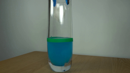
视觉工具实际返回图片 2

视觉工具实际返回图片 3
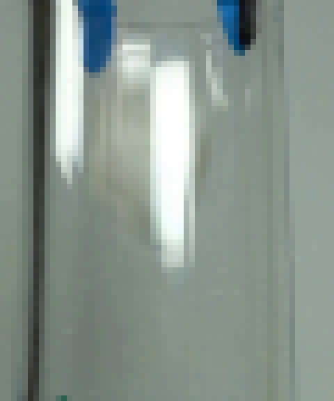
视觉工具实际返回图片 4
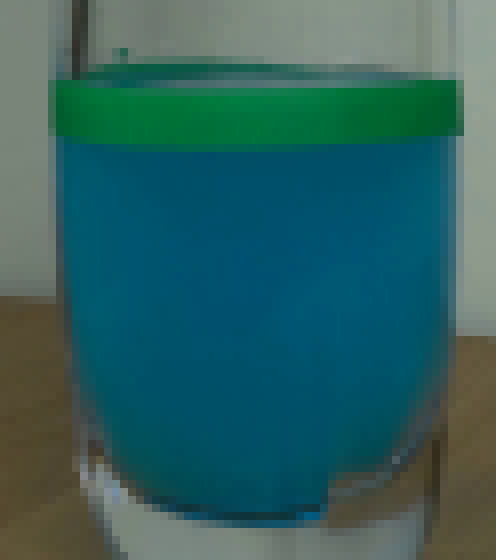
视觉工具实际返回图片 5
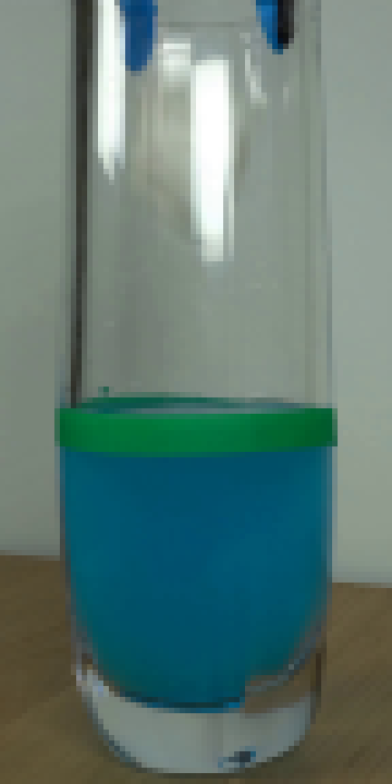
视觉工具实际返回图片 6
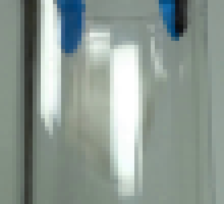
视觉工具实际返回图片 7
视觉工具实际返回图片 8
视觉工具实际返回图片 9
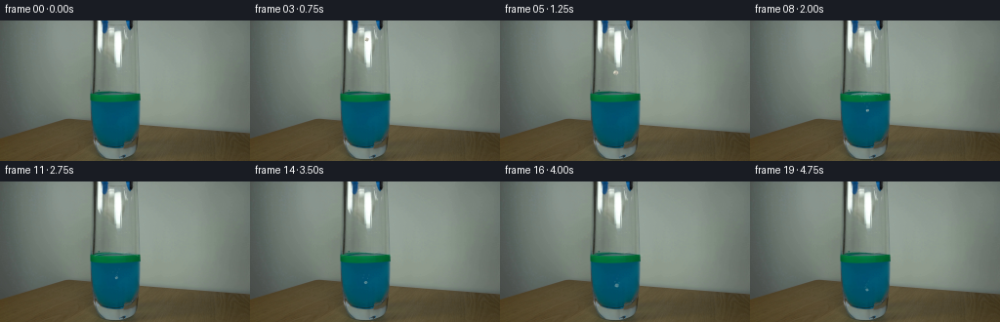
视觉工具实际返回图片 10
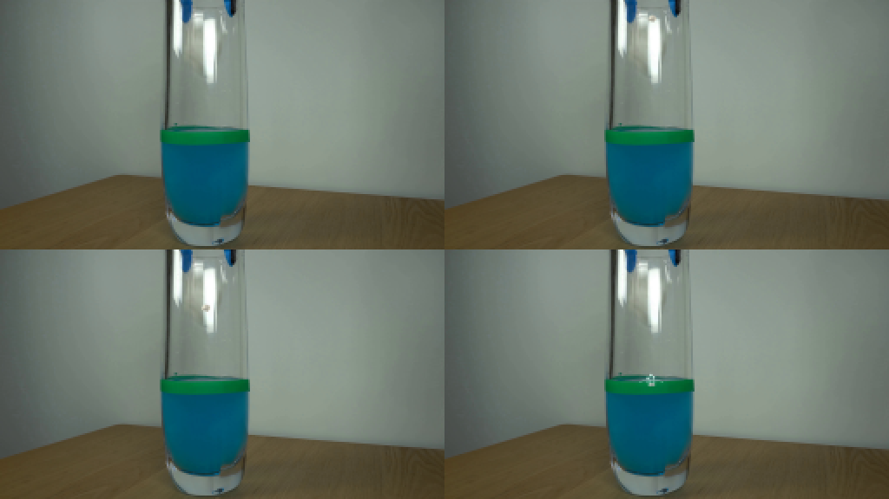
视觉工具实际返回图片 11
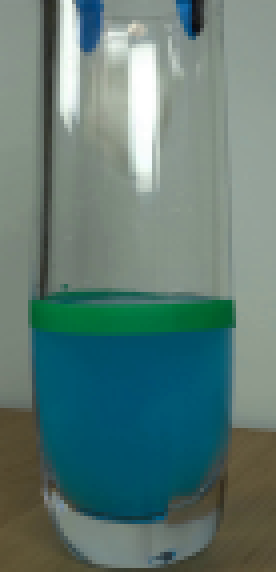
视觉工具实际返回图片 12
视觉工具实际返回图片 13

视觉工具实际返回图片 14
视觉工具实际返回图片 15
视觉工具实际返回图片 16
视觉工具实际返回图片 17
视觉工具实际返回图片 18
视觉工具实际返回图片 19
视觉工具实际返回图片 20
视觉工具实际返回图片 21
视觉工具实际返回图片 22
视觉工具实际返回图片 23
视觉工具实际返回图片 24
视觉工具实际返回图片 25
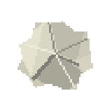
视觉工具实际返回图片 26
视觉工具实际返回图片 27
视觉工具实际返回图片 28

视觉工具实际返回图片 29
视觉工具实际返回图片 30
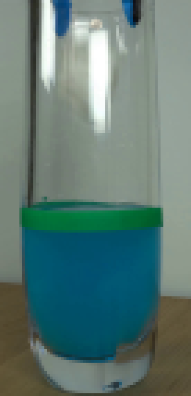
视觉工具实际返回图片 31
视觉工具实际返回图片 32
视觉工具实际返回图片 33
视觉工具实际返回图片 34
视觉工具实际返回图片 35
视觉工具实际返回图片 36
视觉工具实际返回图片 37
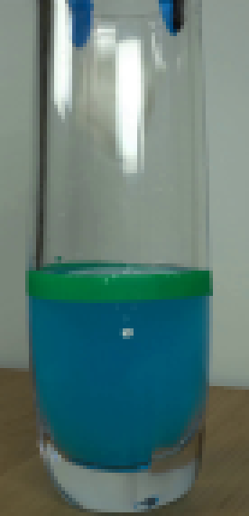
视觉工具实际返回图片 38
视觉工具实际返回图片 39
视觉工具实际返回图片 40
视觉工具实际返回图片 41
视觉工具实际返回图片 42
视觉工具实际返回图片 43
视觉工具实际返回图片 44
视觉工具实际返回图片 45
视觉工具实际返回图片 46
视觉工具实际返回图片 47
视觉工具实际返回图片 48
视觉工具实际返回图片 49
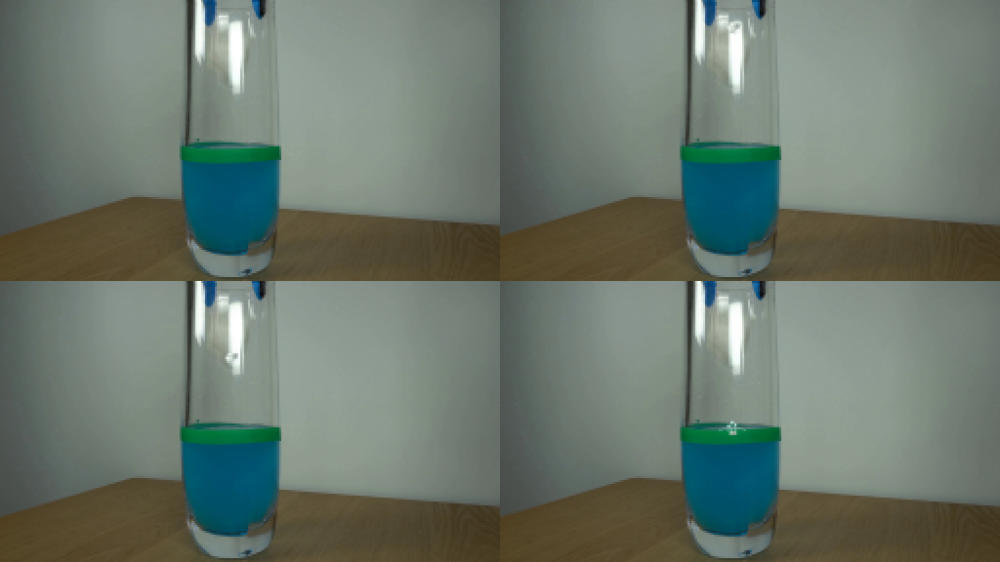
视觉工具实际返回图片 50
视觉工具实际返回图片 51
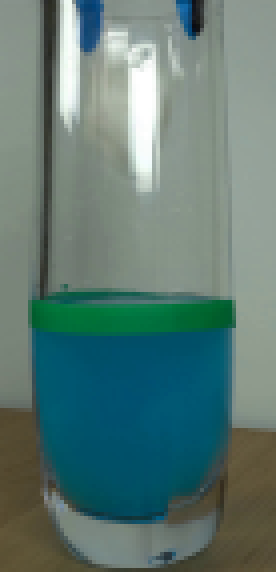
视觉工具实际返回图片 52
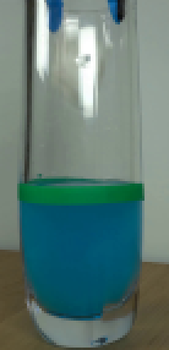
视觉工具实际返回图片 53
视觉工具实际返回图片 54
保存候选 4 份；完成命令 42 次；可验证图片返回 54 张。原始 API 响应与完整日志保留在本地。